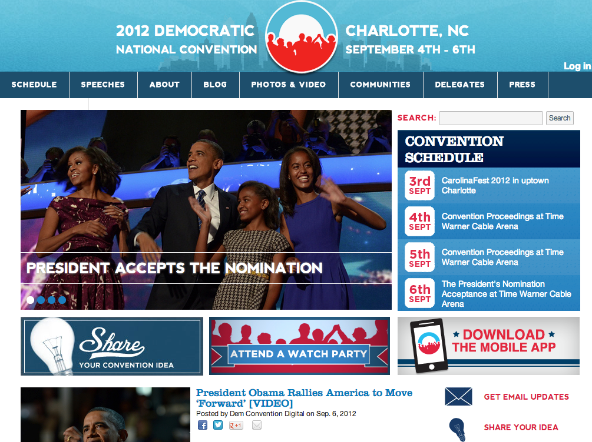
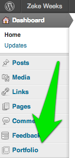
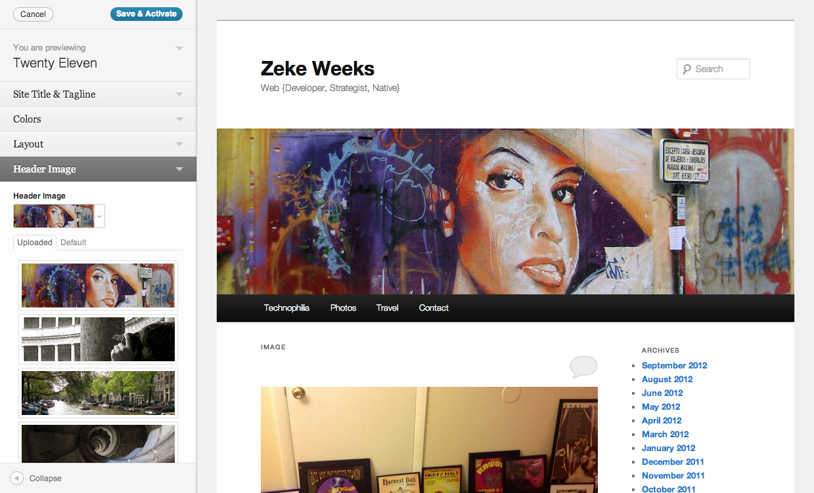

Building
WordPress Sites
to Last
I'm Zeke Weeks.
Also Native
 is different.
is different.
http://wordpress.org/about/philosophy
- Out of the Box:
You shouldn't have to battle to use the standard functionality of WordPress.
- Design for the Majority:
The average WordPress user simply wants to be able to write without problems or interruption.
Align Your Biggest Content Efforts With The Best-Supported Parts of WordPress
Align Your Biggest Content Efforts With The Best-Supported Parts of WordPress
This is a mindset, not a method.
Align Your Biggest Content Efforts With The Best-Supported Parts of WordPress

Some sites don't need to last that long
Building to last: a high level
Plugins are just one important tool for communicating effectively with WordPress
Building to last: a high level
- Use WordPress core functionality to create and organize content
- Use themes to reinforce your identity and lay out your content from core
- Use plugins to extend WordPress for specialized functionality.
Use WordPress core functionality to create and organize content
Core should provide features that 80% or more of end users will actually appreciate and use.
- Posts, Pages, Media, Widgets, Menus, Tags, Categories, Post Formats, User Profiles, Settings
- Get to know the Codex: http://codex.wordpress.org/
- These features are the ones that themes and plugins enhance and extend
Use themes to reinforce your identity and lay out your content from core
- Know how long your theme needs to last and stay fresh
- Ensure themes fully support the core features you're using
Use themes to reinforce your identity and lay out your content from core
Some themes create lots of new content structures. Use sparingly!
Tip: personalize a simple theme with your own graphics and colors
Use plugins to extend WordPress for specialized functionality.
The majority of WordPress users don't require Plugins, or only require a few...
–WordPress Codex
Align Your Biggest Content Efforts With The Best-Supported Parts of WordPress
Backups
Hosting
- Traditional hosts aren't responsible for your WordPress
- Managed WordPress hosting: they do backups, upgrades, security
- Page.ly and WP Engine at WordCamp Denver